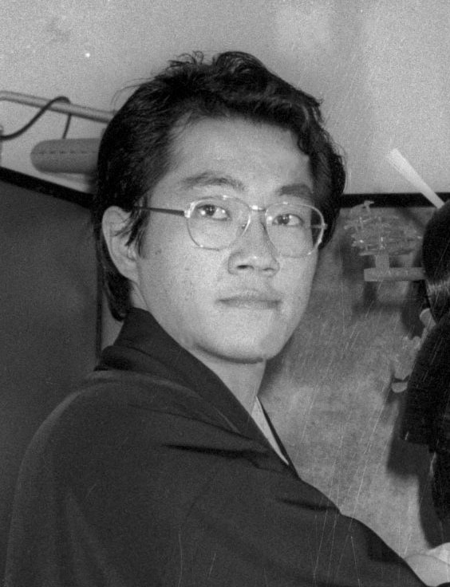

|
Akira Toriyama é um renomado mangaka japonês, mundialmente conhecido por criar algumas das obras mais icônicas da cultura pop, incluindo "Dragon Ball" e "Dr. Slump". Nascido em 5 de abril de 1955, na cidade de Nagoya, Japão, ele desde cedo mostrou interesse pelo desenho e pela arte. Durante sua infância e adolescência, Toriyama demonstrou talento para o desenho, frequentemente desenhando mangás e participando de concursos de arte. Apesar de não ter frequentado uma escola de arte formal, sua paixão pelo desenho o levou a desenvolver suas habilidades por conta própria. Em 1974, após terminar o colegial, Akira Toriyama conseguiu um emprego em uma empresa de design gráfico, onde trabalhou por alguns anos. No entanto, ele logo percebeu que sua verdadeira paixão estava no mundo dos mangás, e decidiu se dedicar integralmente a isso. Sua carreira como mangaka começou em 1978, quando ele ganhou o segundo lugar no 2º Concurso de Novos Talentos da Weekly Shonen Jump, uma das revistas de mangá mais populares do Japão. Seu trabalho chamou a atenção dos editores, e logo ele começou a serializar suas próprias histórias na revista. Em 1980, Akira Toriyama alcançou seu primeiro grande sucesso com "Dr. Slump", uma série de comédia que apresentava a adorável androide Arale e suas aventuras malucas na Vila Pinguim. A série foi um sucesso instantâneo e solidificou o nome de Toriyama como um dos principais mangakas da época. No entanto, foi com "Dragon Ball", lançado em 1984, que Toriyama se tornou uma lenda do mundo dos mangás. Essa série de artes marciais, aventura e fantasia rapidamente se tornou uma sensação global, inspirando inúmeras adaptações, incluindo animes, filmes, jogos de vídeo game e produtos de merchandising. Desde então, Akira Toriyama continuou a trabalhar em diversos projetos, incluindo outras séries de mangá como "Dr. Slump Returns" e "Cowa!", bem como a criação de personagens para videogames e colaborações em filmes de animação. Apesar de sua influência duradoura e seu legado inegável, Toriyama é conhecido por sua relutância em permanecer sob os holofotes, optando por uma vida relativamente reservada em sua casa no interior do Japão. Morreu aos 68 anos em 1 de março de 2024. No entanto, seu impacto na cultura pop japonesa e mundial é inegável, e seu nome será lembrado por gerações como um dos maiores mestres dos mangás. |
 |
|---|